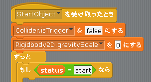

Scratch is developed by the Lifelong Kindergarten Group at the MIT Media Lab. See http://scratch.mit.edu
重力を設定する
次に Cat に重力を与えて自動的に下に落ちるようにしてみます。
Unity2Dのゲームオブジェクトに重力を与えるためには「Rigidbody2D」コンポーネントをアタッチしてから「gravityScale」プロパティに値を入れます。
この Rigidbody2D コンポーネントの gravityScale プロパティの値は通常は Start や Update などのイベントメソッドではなく、最初から「インスペクタ」を使って値をセットすることが多いです。
ただし今回の Scratch2Unity にはインスペクタがありませんので、代わりに図1の様に Cat のスクリプトが開始した直後に Rigidbody2D の gravityScale に値をセットしています。
なおデフォルトでは重力は 0 にしていますので Cat には重力がありません。
また、実際のUnityの場合は gravityScale をプラスの値にすると下に落ちますが、scrach2unity の場合は仕様上の問題でマイナスの値にすると下に落ちます。
図1: インスペクタ(もどき)で重力セット (デフォルト値 = 0 )
